802-PAINTER · 802-724-6837
Drag across a photo to compare. Real jobs, photographed by our crew on the first and last day.
Siding, trim and screened porch
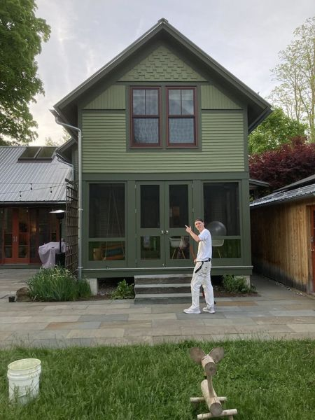
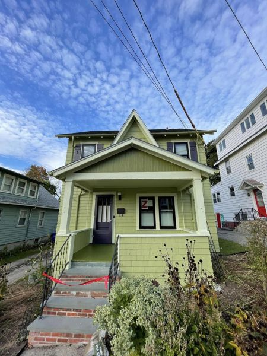
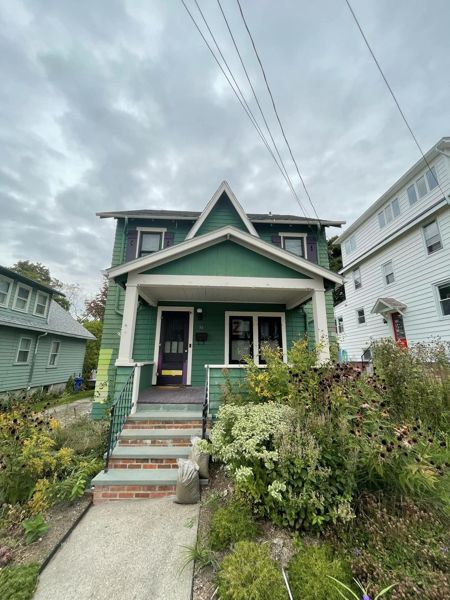
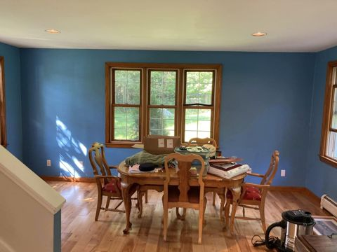
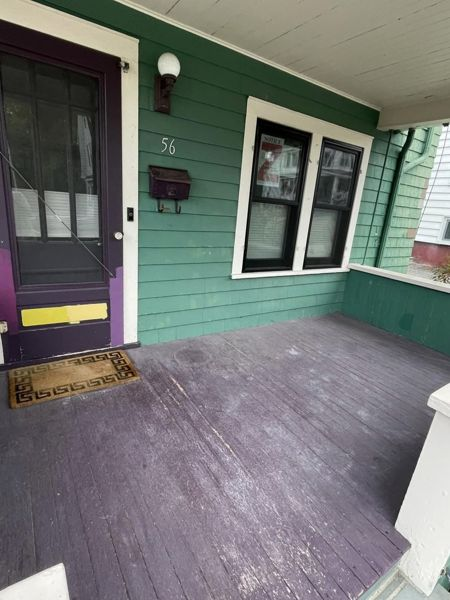
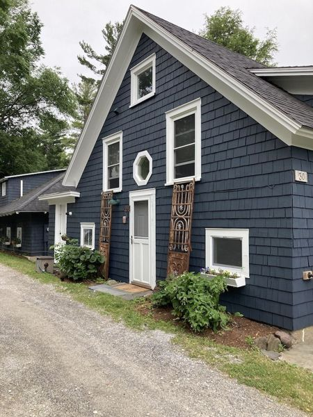
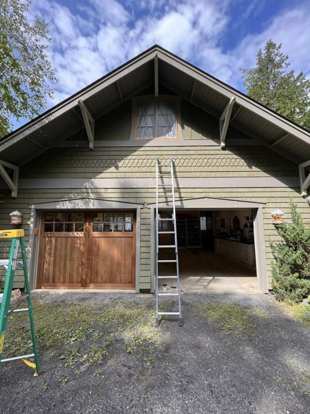
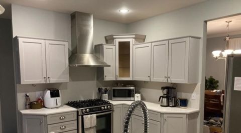
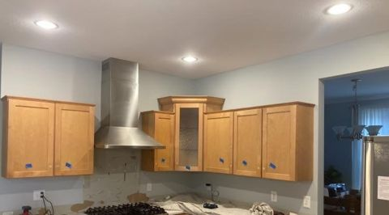
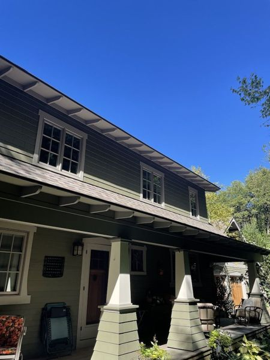
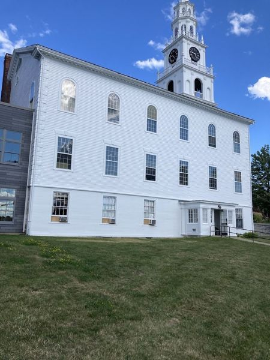
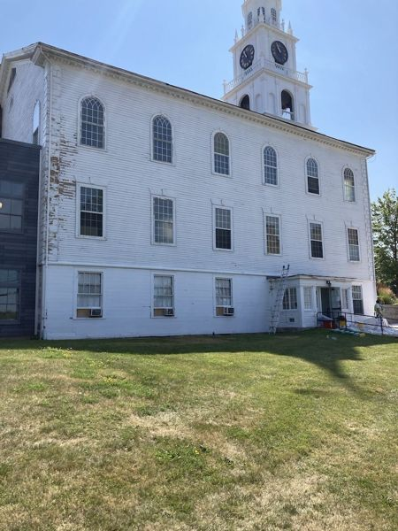
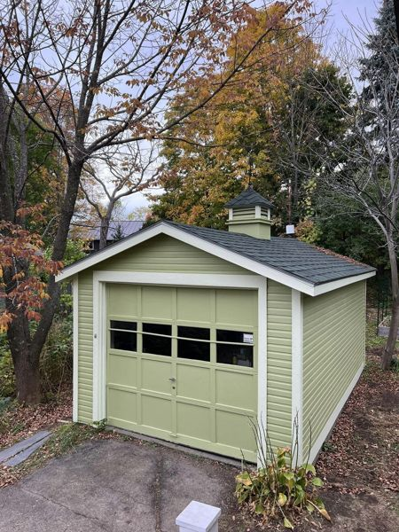
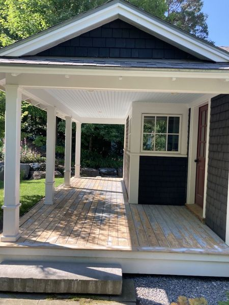
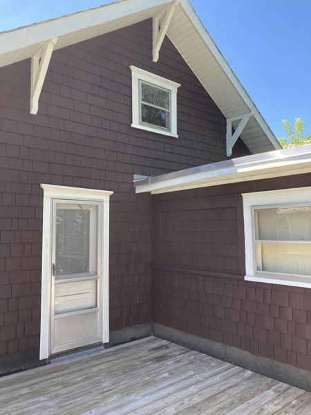
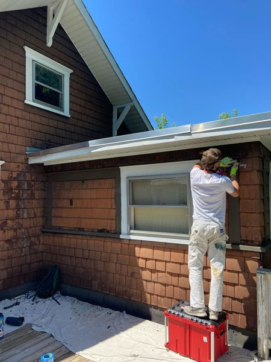
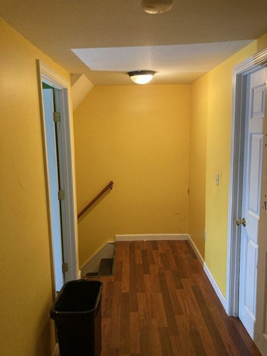
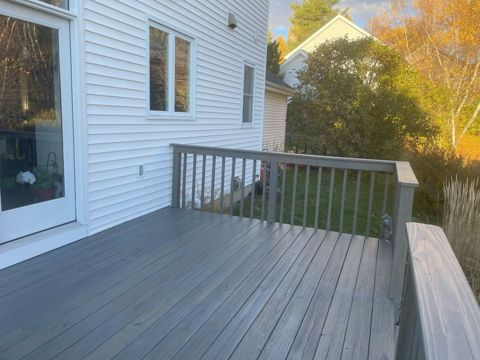
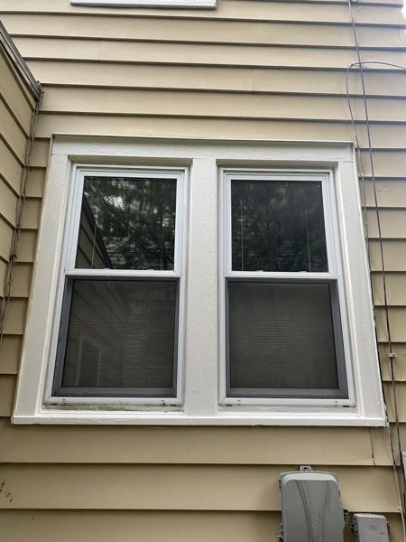
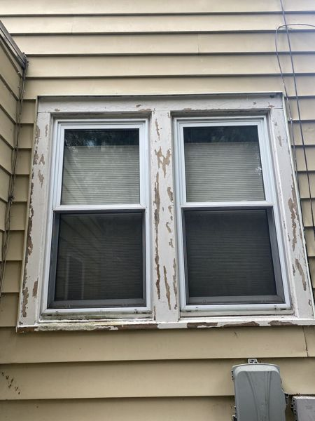
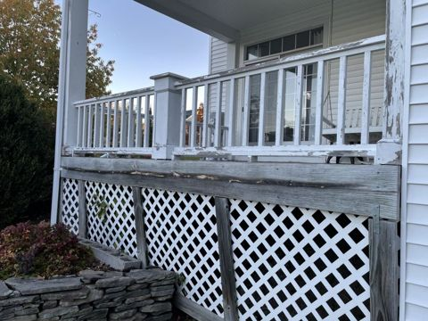
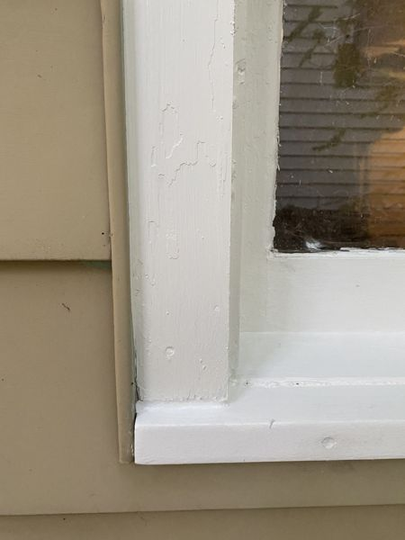
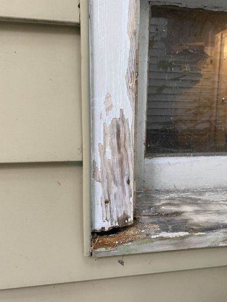
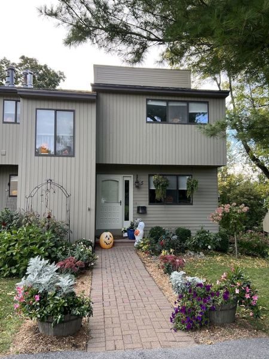
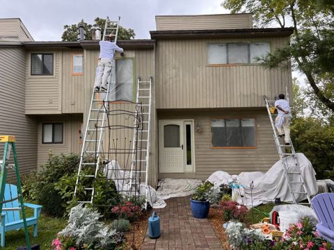
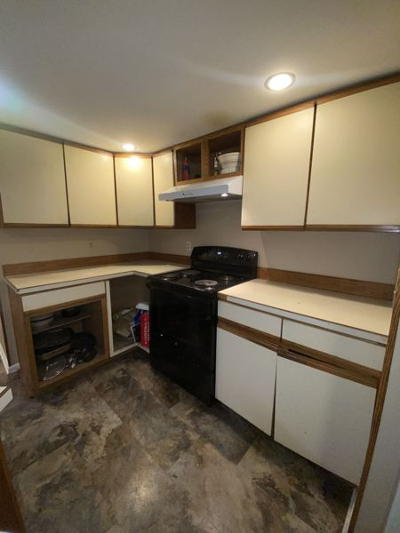
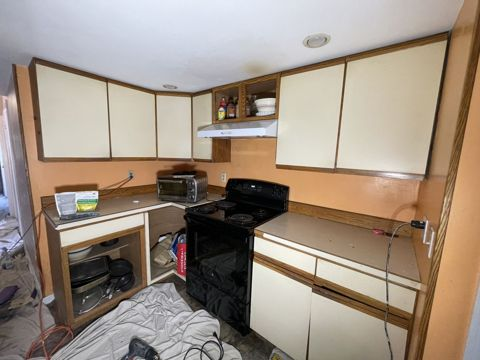
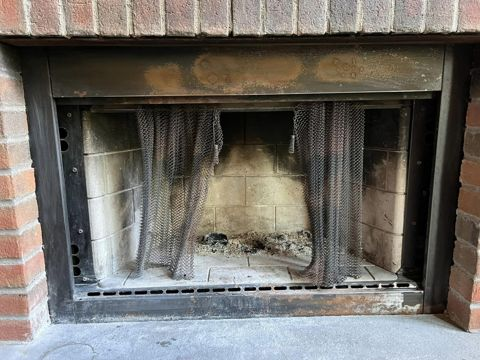
Planning a project? We’ll walk it with you and send a written estimate.